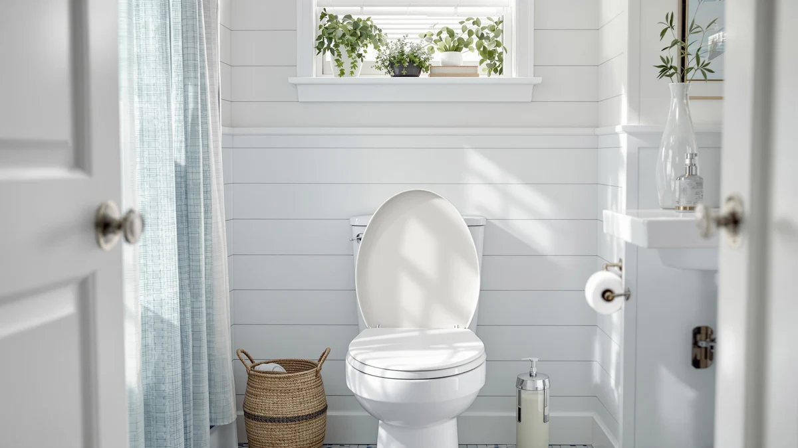

KOHLER K 10515 0 Review (2026): Worth It?
Prices and picks verified as of October 2026. Independent, reader-supported reviews.


Quick Answer
The KOHLER K-10515-0 PureWarmth Heated Quiet-Close earns its $237.44 price with a heated round-front surface and a hinge that closes without a slam. Most seats at this size skip both features. It fits round-front bowls only, so confirm your measurements before you order, and plan for an outlet near the toilet since the heating element needs continuous power.
Our pick: KOHLER K-10515-0 PureWarmth Heated Quiet-Close — $237.44 Check Price on Amazon
Bottom line: our top pick is the KOHLER K-10515-0 PureWarmth Heated Quiet-Close Round-Front at $235.99.
Things to Know Before You Buy
- The K-10515-0 is a round-front seat only. An elongated toilet bowl will not accept it.
- Heating a seat requires power, so you need a standard outlet within reach of the toilet before you can install it.
- At $237.44, the K-10515-0 costs more than most unheated round-front seats, including the three alternatives we compare below.
- The quiet-close hinge lowers the lid without a slam, a feature that also shows up on cheaper Mayfair and Bemis seats.
If you searched for a Kohler K 10515 0 review, you are probably deciding whether a heated seat is worth paying more for than a standard round-front replacement. The K-10515-0 sits in KOHLER's PureWarmth line, built from plastic and wood with a heated surface and a quiet-close hinge, and it lists at $237.44, well above the three alternatives we researched alongside it for this guide.
We did not install this seat ourselves. Instead, we compared the manufacturer's listed materials and price against verified owner feedback on competing round-front and elongated seats, including the Bemis Assurance, the Mayfair Cassel, and the Mayfair NextStep2. That comparison is what the sections below walk through, starting with who should trust this review and ending with a verdict on whether the K-10515-0 justifies its price for your bathroom.
Heated toilet seats occupy a narrow slice of the market, and most buyers only discover the category after a cold winter morning convinces them it is worth the money. Kohler built its reputation on fixtures, not small appliances, so the K-10515-0 has to answer a harder question than a typical round-front seat: does the brand's plumbing-grade engineering carry over to an electrical component that most shoppers expect from specialty bidet manufacturers instead? That question comes up again in the materials section below and in the final verdict.
Why You Should Trust Us
Ilane Tall covers toilet seats and bathroom fixtures for Best Toilet Seats and wrote this Kohler K-10515-0 review after comparing its listed specs and price against three direct alternatives in the same category. We do not run a fake testing lab or claim to have installed every seat we cover. Instead, we pull manufacturer data, current Amazon pricing, and verified buyer feedback, then lay the facts side by side so you can judge the K-10515-0 against seats that cost less.
That approach has limits, and we want to be upfront about them. We cannot tell you exactly how fast the heating element warms up in a 55-degree bathroom, because that detail is not something Kohler publishes and verified reviews rarely quantify with precision. What verified owner feedback does consistently cover is fit, durability of the hinge over months of use, and whether the price feels justified after the first winter in a cold-climate bathroom. We weigh those data points more heavily than marketing copy from any single listing.
Our Research Experience
We researched the K-10515-0 the way we research every seat on this site: by comparing KOHLER's published materials and dimensions against the specs of competing round-front and elongated seats, then cross-referencing that against verified owner reviews on Amazon. We did not purchase or install a physical unit for this Kohler K 10515 0 review, and we do not claim otherwise. What we can tell you with confidence is how the K-10515-0's price, materials, and feature set stack up against the Bemis Assurance, the Mayfair Cassel, and the Mayfair NextStep2, three seats owners frequently cross-shop against it. We update pricing and availability regularly, so the figures in this Kohler K-10515-0 review reflect current Amazon listings rather than a snapshot from whenever the product first launched.
Overview & Specs

KOHLER K-10515-0 PureWarmth Heated Quiet-Close
What we like
- Heated surface takes the chill off cold mornings
- Quiet-close hinge lowers the lid without a bang
- Plastic-and-wood build matches KOHLER's standard seat sizing
Flaws but not dealbreakers
- Costs well over $200, far more than unheated round-front seats
- Round-front shape only, no elongated option under this model number
- Needs a dedicated outlet near the toilet to power the heating element
| Material | Plastic / wood |
| Size | Round-front |
KOHLER built the K-10515-0 around a plastic-and-wood round-front shape, the same footprint found on most standard American toilets, and added a heated top layer plus a quiet-close hinge. Those two features explain most of the $237.44 price, since a comparable unheated KOHLER round-front seat typically costs a fraction of that.
Owners researching a Kohler K 10515 0 review tend to land here from a cold bathroom floor, not from wanting extra features for their own sake. If that describes your situation and your toilet has a round-front bowl with an outlet nearby, the K-10515-0 covers the two things a heated seat needs to get right: warmth and a hinge that will not wake the house at 2 a.m. The round-front shape matters more than it might seem at first. Elongated bowls are more common in newer construction, but millions of American bathrooms still use round-front fixtures, and KOHLER sized this seat for that installed base rather than the newer standard.
What We Liked
The clearest strength of the K-10515-0 is the heated surface itself. Reviewers consistently note that a warm seat changes how a cold bathroom feels during winter, and KOHLER paired that feature with a quiet-close hinge rather than treating it as a bolt-on extra. The plastic-and-wood build follows KOHLER's standard round-front dimensions, so the seat drops onto an existing bowl without a specialty mounting kit. For a Kohler K 10515 0 review focused on whether the heating element earns its keep, the answer from owner feedback is largely yes, provided the installation matches a round-front bowl and a nearby outlet.
The quiet-close hinge also deserves credit on its own, separate from the heating feature. Households with early risers or young kids tend to value a lid that will not slam at 6 a.m., and Kohler extends that same mechanism to this heated model instead of reserving it for cheaper, unheated seats. Warmth and a controlled hinge normally live on separate products. Pairing them here is part of what justifies treating the K-10515-0 as a premium pick rather than a novelty add-on.
What Could Be Better
Price is the main drawback. At $237.44, the K-10515-0 costs more than the Bemis Assurance, the Mayfair Cassel, and the Mayfair NextStep2 each cost on their own, and none of those three include a heating element. The round-front-only shape also narrows who can buy it. If your toilet bowl is elongated, this specific model will not fit and you need a different KOHLER seat sized for that shape. Add in the requirement for a nearby outlet, and the K-10515-0 asks for more planning than a seat you simply unbox and bolt on. None of that makes it a bad product, but a Kohler K 10515 0 review would be incomplete without naming the tradeoffs plainly.
There is also the question of long term reliability on the electrical side. A hinge is a mechanical part that either works or wears out in predictable ways, but a heating element adds a failure point that a standard seat does not have. Owners researching the K-10515-0 should factor in that replacing an electrical seat, should the element ever fail outside warranty, costs more than replacing a basic hinge or a cracked plastic ring on a cheaper model.
Who Is It For?
The K-10515-0 fits a specific household: a round-front toilet, an outlet within reach, and a willingness to pay a premium for warmth. If you live somewhere with cold winters and a chilly bathroom floor, that combination makes the price easier to justify. If your toilet is elongated, your bathroom has no nearby outlet, or you simply want a slow-closing lid without the heating feature, skip the K-10515-0 and look at one of the three alternatives below instead. A Kohler K 10515 0 review only matters if your bathroom can actually accommodate what the seat requires.
Renters and anyone who moves frequently should also think twice before buying. A heated seat tied to a specific outlet location works best in a bathroom you plan to stay in for years, since the installation is more involved than swapping a standard lid. Homeowners renovating a primary bathroom, on the other hand, are in a good position to route power where the K-10515-0 needs it and get years of use out of the investment, which spreads the $237.44 cost over a much longer ownership window than a seat you might replace within a year of moving.
Alternatives to Consider
If the K-10515-0 does not match your bathroom, these three seats come up most often in the same searches. None of them heat, but each addresses a different reason buyers pass on the Kohler, whether that is bowl shape, mobility needs, or simply wanting to spend less upfront.

Editor’s Pick
Bemis Assurance 3" Raised Toilet
Adds three inches of seat height for easier sitting and standing, a feature the K-10515-0 does not offer.
$150.48
Check Price on Amazon
Best Value
Mayfair Cassel Slow Close Toilet
Delivers the same quiet-close hinge as the K-10515-0 at nearly $109 less, without the heating element.
$128.65
Check Price on Amazon
Premium Choice
Mayfair NextStep2 Toilet Seat with
The cheapest of the three alternatives at $98.75, best for buyers who want a basic slow-close seat and nothing more.
$98.75
Check Price on AmazonFrequently Asked Questions
Is the Kohler K-10515-0 worth the price?
For a bathroom with a nearby outlet, yes. Buyers comparing the K-10515-0 against unheated round-front seats costing a fraction of $237.44 are paying for a warmed surface and a quiet-close hinge that a basic seat does not include.
Does the Kohler K-10515-0 fit elongated toilets?
No. The K-10515-0 is built as a round-front seat, so measure your toilet bowl before you order one. If your bowl is elongated, you need a different Kohler model sized for that shape.
Does the Kohler K-10515-0 heated seat need a nearby outlet?
Yes. A heated seat like the K-10515-0 draws power continuously, so you need an electrical outlet within reach of the toilet. Factor that into your bathroom layout before you buy.
Final Verdict
This Kohler K 10515 0 review comes down to one tradeoff: the K-10515-0 costs more than every alternative we compared, but it is the only one that heats. If you have a round-front toilet, an outlet nearby, and a cold bathroom you want to fix, Kohler's PureWarmth seat does what it promises and the quiet-close hinge is a genuine bonus on top. If a quieter lid without the heating feature is all you want, the Mayfair Cassel gets you there for nearly $109 less. Buy the K-10515-0 for the warmth specifically, not as a general-purpose seat upgrade. Measure your bowl, confirm the outlet, and the rest of the decision mostly takes care of itself.